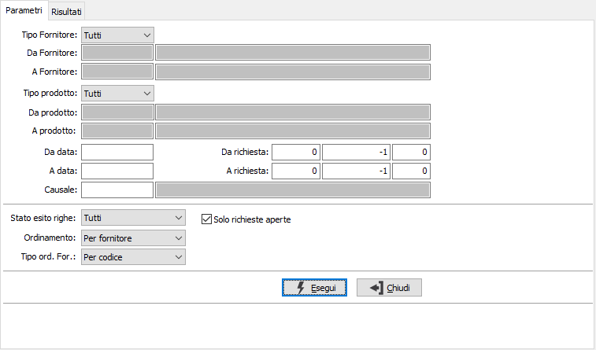
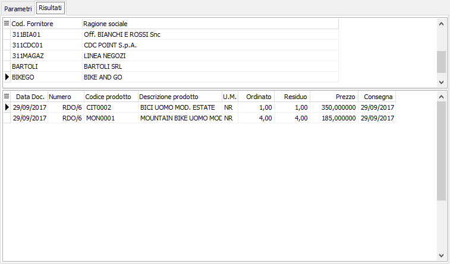

Analisi richieste di offerta
Il programma effettua la visualizzazione delle richieste di offerta esistenti in archivio in base ai parametri inseriti dall’utente.
E’ possibile visualizzare le richieste di offerta relative ad una tipologia omogenea di causali, e/o ad uno o più fornitori e/o ad uno o più prodotti, siano essi provvisori o definitivi, entro limiti di data specificati.
E’ possibile selezionare solo le richieste di offerta aperte oppure tutte le richieste di offerta, filtrando anche lo stato di esito.
Il programma si articola su due finestre video. La prima, Parametri, consente la definizione dei parametri di analisi.

TIPO FORNITORE: consente di analizzare tutti i fornitori, i fornitori provvisori o quelli definitivi.
DA FORNITORE: eventuale codice del fornitore, presente in anagrafica, da cui si vuole iniziare la selezione di analisi. Confermando a vuoto, la selezione inizia dal primo fornitore valido. Sul campo sono attive le funzioni di ricerca (F9).
A FORNITORE: eventuale codice del fornitore, presente in anagrafica, con cui si vuole terminare la selezione di analisi. Confermando a vuoto, la selezione termina con l’ultimo fornitore valido. Sul campo sono attive le funzioni di ricerca (F9).
TIPO PRODOTTO: consente di analizzare tutti i prodotti, i prodotti provvisori o quelli definitivi.
DA PRODOTTO: eventuale codice dell'articolo, presente in anagrafica, da cui si desidera iniziare la selezione di analisi. Confermando a vuoto, la selezione inizia con il primo prodotto valido. Sul campo sono attive le funzioni di ricerca (F9).
A PRODOTTO: eventuale codice dell'articolo, presente in anagrafica, a cui si desidera terminare la selezione di analisi. Confermando a vuoto, la selezione termina con l’ultimo prodotto valido. Sul campo sono attive le funzioni di ricerca (F9).
DA DATA: eventuale data del documento da cui deve iniziare l’analisi dei documenti relativamente ai precedenti parametri di selezione. Confermando a vuoto, l’analisi inizia con il primo documento valido.
A DATA: eventuale data del documento con cui si desidera terminare l’analisi dei documenti relativamente ai precedenti parametri di selezione. Confermando a vuoto, l’analisi si conclude con l'ultimo documento valido.
DA RICHIESTA: indicare anno, serie (-1 tutte), e numero da cui iniziare l'elaborazione.
A RICHIESTA: indicare anno, serie (-1 tutte), e numero con cui terminare l'elaborazione.
CAUSALE: eventuale codice della causale delle richieste di offerta a cui si vuole restringere la selezione di analisi. Sul campo sono attive le funzioni di ricerca (F9) sulla tabella omonima.
STATO ESITO RIGHE: definisce quali tipologie di righe, in base all'esito, si desidera includere nell'analisi: tutti, in valutazione, accettate dal fornitore, approvate, annullate, respinte dal fornitore; nel caso si scelga Tutti le tipologie saranno evidenziate nell'analisi da colori diversi.
ORDINAMENTO: combo box per definire i criteri di ordinamento. Valori ammessi: Per fornitore; Per prodotto.
TIPO ORDINAMENTO FORNITORE: attivo solo se l'ordinamento è per fornitore; definisce se i fornitori devono essere riportati per codice o per ragione sociale.
SOLO RICHIESTE APERTE: check box per definire lo stato dei documenti da selezionare. Valori ammessi: vuoto = tutti i documenti; spunta = solo i documenti aperti.
Confermando tramite pressione del bottone Esegui, viene avviata la selezione e richiamata la finestra video Risultati.

La finestra video è articolata su due sezioni: la sezione superiore elenca i fornitori o gli articoli selezionati in base al tipo di ordinamento scelto.
La sezione inferiore elenca invece i movimenti relativi al fornitore oppure all’articolo selezionato, che è quello contrassegnato dalla freccia, a sinistra del rigo nella sezione superiore. I pulsanti Dettaglio in basso, visibili solo se gestito il dettaglio delle quantità, se attivi, consentono la visualizzazione del dettaglio quantità del singolo rigo selezionato, oppure, se l'analisi è per prodotto, dei dettagli quantità totali del prodotto selezionato; è possibile entrare direttamente in manutenzione del documento facendo doppio clic nella sezione inferiore sul rigo del documento interessato.